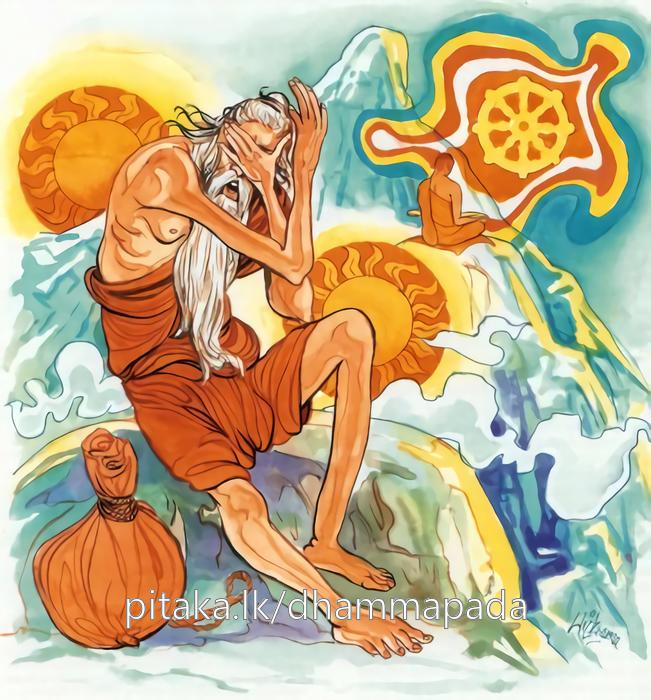

8-14 බොහෝ දූ පුතුන් ලැබූ මෙහෙණ
මෙම කතාව ධම්මපද අටුවාවෙන් ද කියවන්න.
යො ච වස්සසතං ජීවෙ, අපස්සං ධම්මමුත්තමං
එකාහං ජීවිතං සෙය්යො පස්සතො ධම්මමුත්තමං.
උතුම් (නව ලොවුතුරා) දහම් නුවණැසින් නොදක්නා යමෙක් ඉදින් හවුරුදු සියයක් ජීවත් වූයේ නමුදු, (ඔහුගේ ජීවත් වීමට වඩා) උතුම් (නව ලොවුතුරා) දහම් නුවණැසින් දක්නාහුගේ එක් දවසක් ජීවත් වීම උතුමි.

එදා සැවැත්නුවර ගෙයක පුත්තු සත් දෙනෙක් හා දූවරු සත් දෙනෙක් හා යන දූපුත්තු දස සතර දෙනෙක් වාසය කළහ. මේ පවුලේ සිටි මේ සියල්ලෝ ම පවුල් රැකීමට සුදුසු වයසට පැමිණ සිටියෝ, කරකාර බැඳ ගෙණ ඩහදිය මහන්සියෙන් දිවි රකිමින් සුව සේ විසූහ. දූ පුතුන් මෙසේ ගිහිගෙට ඇතුල් ව ටික දවසක් ගිය තැනේ දී, එහි පිය තෙමේ කලුරිය කෙළේ ය. ඔහුගේ බිරිඳ තම හිමියා නැසී ගියේ ද, තමන් අයත් වතුපිටි ගේදොර මිලමුදල් ආදී බුදලයට අයත් කිසිවක් දූපුතුන්ට නො දී තොමෝ ම බූදලය රැක බලා ගත්තා ය. එහෙත් ඇයගේ දූපුත්තු මෙය නො ඉවසූහ. එහෙයින් දිනෙක, ඒ හැමදෙන එක් ව මෑණියන් වෙතට ගොස් “අම්මා! අපගේ තාත්තා මැරී ගොස් අදට ටික කලක් ගත විය, අම්මා ද දැන් මහලු ය, අම්මාට බුදලයේ කටයුතු කිරීම දැන් පහසු නැත, අම්මාට එයින් ඇති ප්රයෝජනය කුමක් ද, අම්මාට දැන් වුවමනා කරන්නේ, හොඳට කා බී හැඳ පැලඳ පින් දහම් කිරීම ය, අම්මාට වුවමනා හැම දෙයක් ම අපට කළ හැකි ය, අම්මාගේ උපස්ථානය අපි හොඳට කරන්නෙමු, අපි එයට බැඳී සිටින්නෙමු” යි කීහ. ඕ තොමෝ ඔවුන්ගේ ඒ කතාව අසා නිහඬ වූ ය. දූපුත්තු නැවැත නැවැතත් එක් ව ගොස් මෙසේ කීහ.
දවසක මේ මහලු මවු තොමෝ දූපුතුන් ගෙන්වා “දරුවෙනි! තෙපි මාගේ කටයුතු නො නසා අඩු පාඩු නො කොට බූදලයට අයත් ඉඩකඩම් වතුපිටි ආදිය රැක බලා ගණිමින්, වැඩපල කරන්නහු නම්, මට බූදලයෙන් වැඩෙක් නැත, තොපට එය හොඳින් රැක බලා ගත හැකි නම්, අද හෙට ම මට එය තොපට භාරදිය හැකි ය” යි කිවූ ය. ඔවුහු “අපට එය ඉතා පහසුවෙන් රැක බලා ගත හැකි” යි කීහ. දිනක් මවු තොමෝ සියලු දූපුතුන් ගෙන්වා මුළු බුදලය ජීවිතබුත්තිය ද නො තබා ඔවුන් අතර බෙදා දුන්නු ය.
ඉන් දවස් කීහිපයකට පසු, ඕ තොමෝ වැඩිමහල් පුතුගේ ගෙට ගියා ය. වැඩිමහල් පුතුගේ බිරිය, එන්නා වූ නැන්දම්මා දැක, “නැන්දම්මා එනවා අපේ, අනේ, වාසනාවන්, නැන්දම්මා මෙහි එන්නී වැඩිමහල් පුතු යි සලකා, වැඩිමහල් පුතුට අත පුරා බඩ පුරා දෙකොටසක් දුන් සේ සිතා ගෙණ ය” යි ඒ මහලු මවට ඇසෙන සේ හඬ නඟා කිවූ ය. අනික් පුතුන්ගේ ගෙවලට ගිය ගියදාත් ඒ ලේළිලා ද මෙසේ ම කීහ. දූවරුත් කීවාහු එසේ ය. ඈලා ද “මෑ අප වැදූ මවැ” යි නො සැලකූහ. ජඩලෝකය, අධමලෝක ය, දුෂ්ටලෝක ය, දුෂිතලෝක ය, අකෘතඥ ලෝක ය.
මෙසේ හැම දූපුතුන්ගේ අවමානයට පැමිණි ඒ මහලු මවු තොමෝ “මුන් ලඟ ඉඳීමෙන් වැඩෙක් නො වේ, කොතරම් සිටිය ද වන්නේ මෙසේ ය; මග නහින්නට සිදු වන්නේ ය, ඒ නිසා මෙහෙණවරට ගොස් මහණ වී දිවි ගලවමි” යි මෙහෙණවරට ගොස් පැවිදි වූ ය. උපසම්පදාවට ද පැමිණියා ‘බහුපුත්රිකා ස්ථවිරා’ යි ප්රසිද්ධ වූ ය.
ඉක්බිති බහුපුත්රිකාස්ථවිරා තොමෝ “මහලු වයසට ගොස් පැවිදි වූ බැවින් නිකරුණේ කල්ගෙවිම නො සුදුසු ය, වැඩි බණ දහමක් ඉගෙණීමටත් කාලයෙක් නැත, එහෙත් මහණ කමෙහි නො පමා විය යුතු ය” යි මෙහෙණන් පිළිබඳ වත් පිළිවෙත් කරන්නී මුළු රැය ම භාවනා කරමි, යි යට පහයට බැස, එහි කණුවක් අතින් අල්ලා ඒ වටේ ඇවිදිමින් භාවනා කරන්නී ය. රෑ එලි බැස ඇවිදින විට ද “ගස්වල හැපේය” යි සිතා ගස් අල්ලා ගස් වටේ යමින් භාවනා කරයි. “බුදුරජුන් වදාළ පිළිවෙත ම කරමි” යි ධර්මය ගැන සිතා මතා එය ම සිහියට ගෙණ තදනුකුල ව මහණ දම් කරයි.
මේ වේලෙහි ගඳකිළියෙහි වැඩහුන් බුදුරජානන් වහන්සේ ආලෝකයක් පතුරුවා ඉදිරියෙහි වැඩහුන්නහු සේ “බහුපුත්රිකාව! මා දෙසූ දහම් ගුණ, නො සිතා නො බලා නො දැක නො පිළිපැද අවුරුදු සියයක් ජීවත්වීමට වඩා ඒ දහම් ගැණ, සිතා බලා දැන මොහොතක් ජීවත්වීම උතුම් ය” යි වදාරා අනුසන්ධි ගළපා මේ ධර්මදේශනාව කළ සේක:
යො ච වස්සසතං ජීවෙ අපස්සං ධම්මමුත්තමං,
එකාහං ජීවිතං සෙය්යො පස්සතො ධම්මමුත්තමන්ති.
උත්තමධර්මය නො දක්නා වූ යම් පුද්ගලයෙක් අවුරුදු සියයක් ජීවත් වන්නේ ද, (ඔහුගේ ඒ ජීවත්වීමට වඩා) උත්තම ධර්මය දන්නා වූ පුද්ගලයන්ගේ එක් දවසක් ජීවත්වීම ශ්රේෂ්ඨ වේ.
යො ච වස්සසතං ජීවෙ = යමෙක් අවුරුදු සියයක් ජීවත් වන්නේ ද
අපස්සං ධම්මං උත්තමං = උත්තමධර්මය නො දක්නා වූ. උතුම් දහම් නො දක්නේ.
නවලෝකෝත්තර ධර්මය මෙහි උත්තමධර්ම නම්. සිවු මඟත් සිවු පලයත් නිවනත් ය ඒ.
සතරමග - සතරපල - නිවන, උපාදානස්කන්ධසඞ්ඛ්යාත ලෝකයෙන් එතෙර බැවින් ලෝකය හා නො ගැටී සිටි බැවින් ලෝකෝත්තරධර්ම නම්. ස්කන්ධයෝ ලෝකයට අයත් ය. ලෝකයට අයත් ස්කන්ධයන්ගෙන් කිසිත් නැති බැවින් නිවනම ප්රධාන විසින් ලෝකෝත්තර වේ. සතර මග, සතර පල වසයෙන් ගැණෙන්නේ වේදනා - සංඥා - සංස්කාර - විඥාන යන ස්කන්ධ සතර ට බෙදුනු චිත්ත චෛතසික ධර්ම යි. සංස්කාර ස්වභාවයෙන් සහමුලින් ම තොර වූ නිවන අරමුණු කොට උපදින මාර්ගචිත්තය, සියලු කෙලෙස් නසා උපාදානස්කන්ධ ලෝකයෙන් එතෙර වන බැවින් ලෝකෝත්තර නම් වේ. පලසිත, උපාදානස්කන්ධසඞ්ඛ්යාත ලෝකයෙන් එතෙර වූ බැවින් ලෝකෝත්තර නම් වේ. මාර්ගචිත්ත වීථියෙහි යෙදෙන ස්පර්ශාදිය ද සප්රයුක්තධර්මසහිත වූ ඵලචිත්තය ද චතුස්සත්යයෙහි ඇතුළත් නො වෙති. මාර්ගාඞ්ග අට හැරය.
එකාහං ජීවිතං සෙය්යො = එක් දවසක් ජීවත්වීම උතුම් වේ.
පස්සතො ධම්මංඋත්තමං = උත්තමධර්මය දක්නහුගේ. මාර්ගඥානයෙන් නවලෝකෝත්තර ධර්මය දැන සිටියහුගේ.
ධර්මදේශනාවගේ අවසානයෙහි බහුපුත්රිකා ස්ථවිරා තොමෝ පිළිසැඹියාවන් ලබා රහත් වූ ය.
බහුපුත්රිකා ස්ථවිරාවස්තුව නිමි.